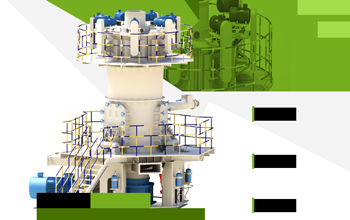

LUM vertical roller mill is a modern cement, chemicals, coal, electricity and other departments widely used as a grinding machinery, set drying, grinding, separator in one. The world's first vertical roller mill developed by the German company Loesche made in 1925. After nearly 90 years of development and improvement, manufacture and application of vertical roller mill to obtain a breakthrough, further large-scale equipment specifications.
LM Vertical roller mill became the family's high-profile stars. It uses a disk-shaped disc, tire-shaped grinding rolls, whole roller sleeve, roller pressure alone can lift or dug outside the mill rolls; using the separator can speed static and dynamic aspects of the separator. These integrated innovation so that it has strong adaptability of materials, smooth running, low noise, low wear, low power consumption, easy to operate, control, reliable, easy to access, easy to adjust the fineness of the product and so on.
Four generations of experience in development and manufacturing mill roll grinding + Germany advanced technology, creating a breakthrough ultra-fine powder processing capacity bottlenecks LUM ultrafine vertical roller mill, making the time to complete ultrafine powder grinding, grading and transportation operations realistic vision, for grinding and classification of various non-metallic minerals, with a large power plant desulfurization project grinding mills, deep processing of slag powder and pulverized coal injection preparation such as limestone provides a new weapon.
Another important factor is the stable operation of LUM vertical roller mill feed bed stability. Material layer is stable, wind, air pressure and volume of feed to stabilize, or we need to be maintained by adjusting the thickness of the material layer air volume and the volume of feed. If not timely adjustment will cause increased vibration, electrical load up or jump stop system and other issues.
Vertical roller mill drive power depends on the pressure and the design parameters of the roller applied to the disc, if too much material on the disc, but did not keep up with the grinding pressure, the low grinding efficiency, grinding power consumption; if the grinding pressure, also increases the grinding power, will adversely affect the device. Vertical roller mill production standards and stable operation, give full play to their energy consumption, reduce the cost advantage is also important. At the same time to increase production, the operator should pay attention to appropriately increase the hot air, ventilation mill, grinding pressure, water quantity and other parameters to ensure pressure stability.
Live chat with our professional customer service! Get the quotation list.
Chat Now